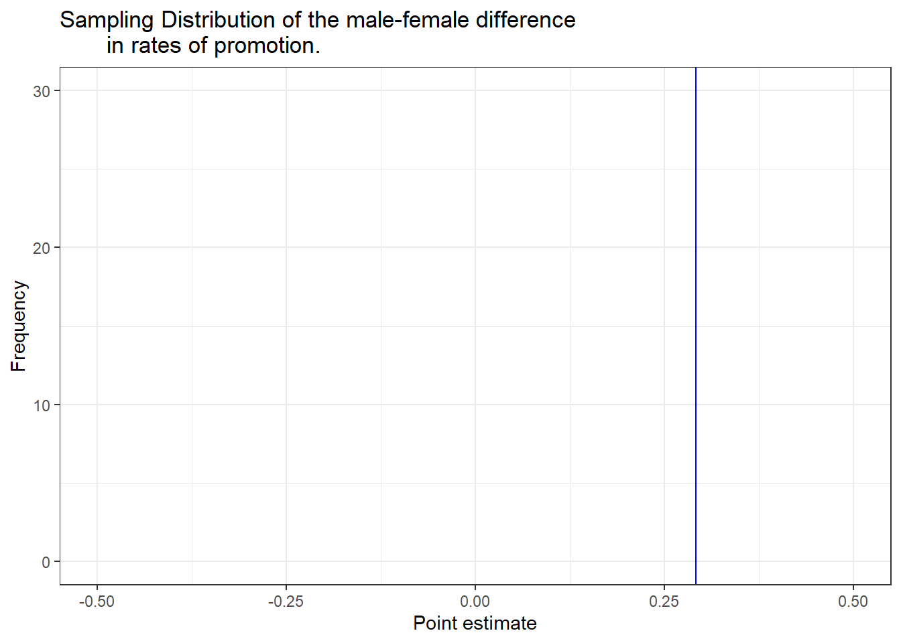

promoted not promoted Sum
male 21 3 24
female 14 10 24
Sum 35 13 48Motivating Example: Case study in sex discrimination
Setup
We consider a study investigating sex discrimination in the 1970s, which is set in the context of personnel decisions within a bank. The research question we hope to answer is, (Rosen and Jerdee 1974). Note: The study allowed only for a binary classification of sex. The identities being considered are not gender identities.
Setup
In this study, 48 male-identifying bank supervisors were asked to assume the role of the personnel director and were given personnel files to judge whether the person should be promoted. The files were identical except half indicated that the candidate identified as male, the other half the candidate identified as female. The files were randomly assigned to the participants, 13 individuals were promoted and the results were recorded.
Is this an observational study or an experiment? Why?
How does the type of study impact what can be inferred from the results?
What is the hypothesis being tested? (in words with no statistical jargon)
Observed Results
The results from the study are displayed in the following contingency table. Use it to fill in the blanks below.
In this study, a ______________ proportion of female identifying applications were promoted than males (______________ versus ______________). Calculate the difference (male - female) in these proportions below.
\[ \frac{\qquad}{\qquad} - \frac{\qquad}{\qquad} = \]
This observed difference is what we call a point estimate of the true difference in promotional rates between males and females. This difference suggest there might be discrimination against women in promotion decisions, is unclear whether there is convincing evidence that the observed difference represents discrimination or is just due to random chance when there is no discrimination occurring.
Chance can be thought of as the claim due to natural variability; discrimination can be thought of as the claim the researchers set out to demonstrate. We label these two competing claims in the following way:
\(H_{0}\): Null Hypothesis:
\(H_{A}\): Alternative Hypothesis:
Often times, the null hypothesis takes a stance of no difference or no effect. This hypothesis assumes that any differences seen are due to the variability inherent in the population and could have occurred by random chance.
We will choose between the two competing claims by assessing if the data conflict so much with \(H_{0}\) that the null hypothesis cannot be deemed reasonable. If data and the null claim seem to be at odds with one another, and the data seem to support \(H_{A}\), then we will reject the notion of independence and conclude that the data provide evidence of discrimination.
Inference via Randomization
To decide whether variability in data is due to
- the causal mechanism (the randomized explanatory variable in the experiment)
- natural variability inherent to the data
we set up a sham randomized experiment as a comparison.
- We assume that each observational unit (person) would have gotten the exact same response value (chance of being promoted) regardless of the treatment level (sex).
- By reassigning the treatments many many times, we can compare the actual experiment to the sham experiment.
If the actual experiment has more extreme results than any of the sham experiments, we are led to believe that it is the explanatory variable which is causing the result and not just variability inherent to the data.
Variability of the statistic
Suppose the bankers’ decisions were independent of the sex of the candidate. Then, if we conducted the experiment again with a different random assignment of promotion to the files, differences in promotion rates would be based only on random fluctuation in promotion decisions. Let’s simulate this as a class so we can get lots of replications for this experiment.
You’re in power now
It’s your turn to assume the role of the bank personnel director and make a promotional decisions. Your group has been handed a stack of 48 confidential applications. Keep them face down for now.
Your results:
\[ \frac{\qquad}{\qquad} - \frac{\qquad}{\qquad} = \]
\[ \frac{\qquad}{\qquad} - \frac{\qquad}{\qquad} = \]
As the class compiles their findings in our shared Google sheet, add those point estimates for the difference to the stacked dotplot below. A line denoting the point estimate from the original study (0.292) has been added.

Describe the distribution of this graph. What does it seem to be centered around?
In what percent of simulations did we observe a difference of at least 29.2% (0.292)? Circle these on your dot plot.
In our analysis, we determined that there was only a \(\approx\) ______ chance of obtaining a sample where \(\geq\) 29.2% more male candidates than female candidates get promoted under the null hypothesis, so we conclude that the data provide _____________ evidence of sex discrimination against female candidates by the male supervisors. In this case, we ________ the null hypothesis in favor of the alternative.